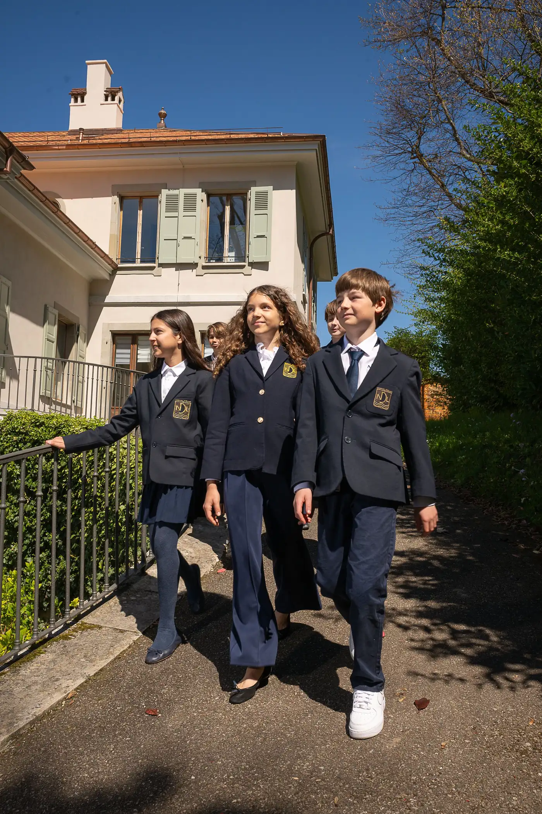
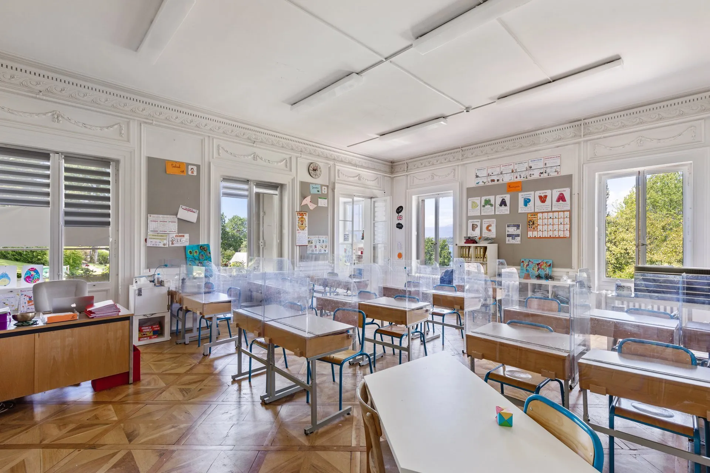
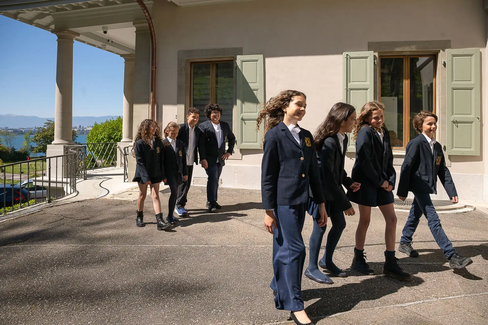
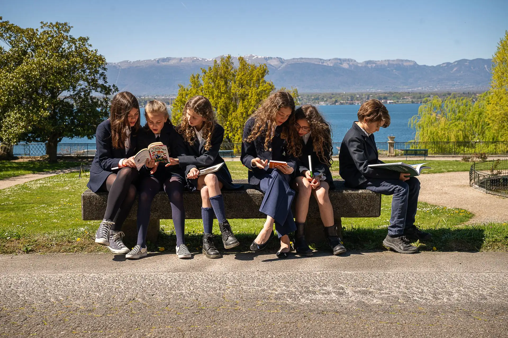
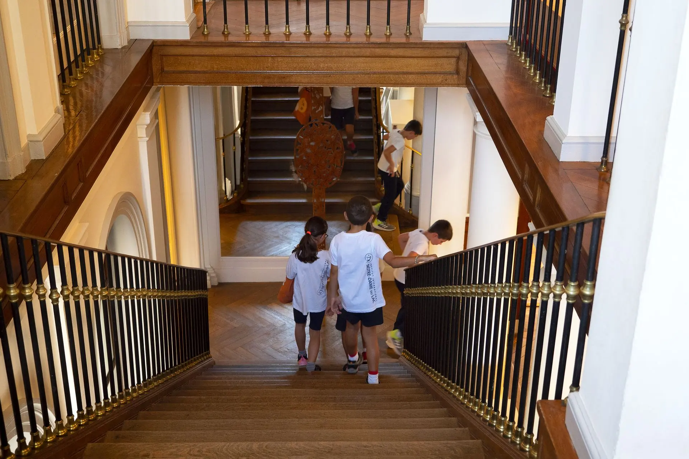

Rentrée 2027 : inscriptions ouvertes dès 3 ans
Plus de 300 enfants de 3 à 11 ans, à Cologny. Excellence scolaire depuis 1946, anglais dès 3 ans.

Ce que l'école met en avant pour chaque enfant.
Depuis 1946 : mathématiques et français, sans oublier les matières complémentaires.
Toutes les classes sont équipées de tableaux interactifs, de beamers et de tablettes.
Anglais dès 3 ans, allemand dès la 9e : s'ouvrir sur le monde.
Des cours d'anglais renforcés, avec une équipe anglophone.
Un encadrement et une approche pédagogique personnalisée.
Sciences, histoire et géographie en anglais, par un binôme d'enseignants.

Plus de 60 activités extra-scolaires sur le temps de midi, après les cours, le mercredi et pendant les vacances : stylisme, jardinage, cuisine, danse, guitare…
L'After School Club commence dès 16h30, après l'étude : temps calme, activités libres et activités dirigées.
Fruits et légumes bio, viandes suisses, produits majoritairement locaux, un repas végétarien toutes les deux semaines. Un label Eco-Schools récompense l'engagement de l'école pour le développement durable.
Les enfants mangent tous les jours, certains jours, ou sont externes.


